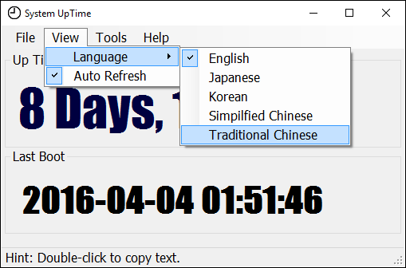
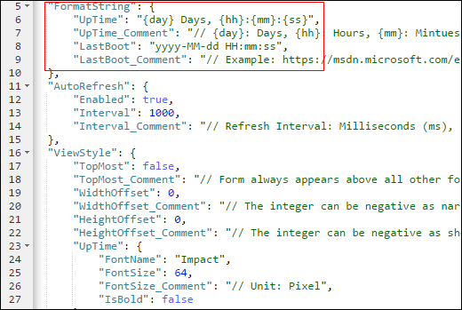

這是一個可查詢系統已運行時間及開機時間的免費軟件工具, UI介面支援多國語言顯示框架，用戶可以自行擴充其他語言及字詞(在Language子目錄仿作)。
This is a portable freeware to show uptime and boot-time information for 24/7 servers. UI supports multilingual and expandable phrases that user can customized.

為了能讓UI介面高客製化，相關設定皆定義在Config.json檔中，您可自行修改。例如畫面的長寬、重疊置頂(TopMost)、字體Size皆能調整，並支援畫面上的時間字串格式化顯示、自動刷新間隔秒數。
Highly-customized UI design in Form Size/Font Family/TopMost features via configuation file. The output texts also support user-defined format string.

Release History
2016/04/22
- 將畫面自訂長寬Size調整納入「Save Preferences」的儲存範圍內，它會自動計算表單的Width/Height Offset的值
- 表單預設寬度，由原本3位數的Days，縮減至2位數的寬度。
2016/04/12
- 支援UpTime及LastBoot的時間自訂格式化字串(FormatString)、顯示字型Size。
- 新增畫面長寬Size調整(Width/Height Offset)及置頂(TopMost)功能。